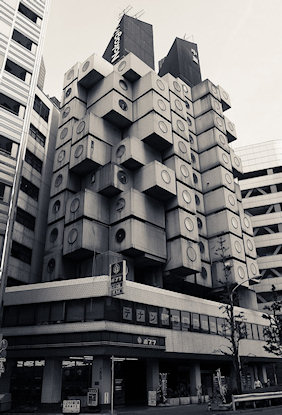
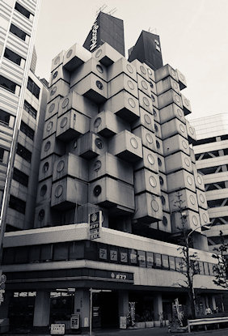
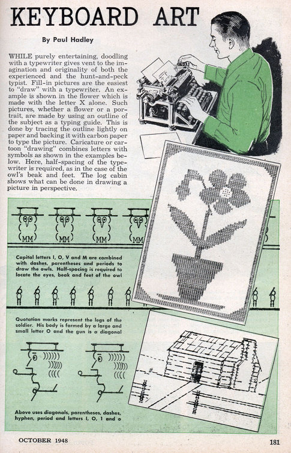
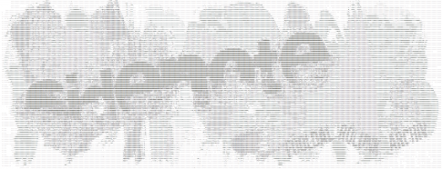
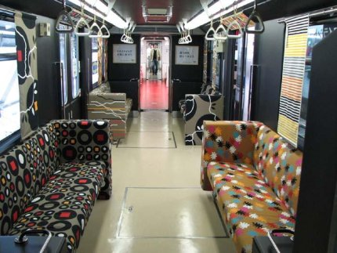

Nakagin kapszula-toronyház, Tokió, 1972. Tervezte: Kurokawa K.
A(z) „gizmó” kategória bejegyzései
Petya jegyzi a következő rövid, tudományos, ismeretterjesztő filmet, melyben a nyelvről van szó: „Mi is az a nyelv? Honnan jött? Hová tart? Mit tudnunk róla, és ő mit tud rólunk?” Igazán frappáns és humoros rövidfilm ez, mely remélhetőleg egy sorozat kezdete, és a későbbiekben Petya megörvendeztet minket még hasonló finomságokkal.
Ha már az ismerőseim fele azt állítja, hogy úgy nézek ki, mint Roy az It Crowdból, akkor számomra megengedett a kockulás.

A héten ismerkedtem meg a Press Play on Tape nevű dán izomkocka bandával, akik régi játékok zenét nyomják koncertjeiken. Először kezdjük talán a csodás Cannon Fodder játék zenéjével, amit a következő klipen csak játékkontrollerek használatával adnak elő a művészek.
https://www.youtube.com/watch?v=hLWw1OpDrpI
Ha megvolt a videó, akkor már csak egy utolsót szeretnék mutatni, ami személyes kedvencem: Monkey Island természetesen a Press Play on Tape előadásában. Legeslegjobb játék és zene. :)
https://www.youtube.com/watch?v=mYZXNVHVfhc
A kocka zene mellá már csak egy kocka képregénysorozatot ajánlanék így vasárnap estére: Geek Hero Comic, ott van.
Mivel jön a karácsony mindketten elfoglaltak vagyunk. Így lehet, hogy a következő bejegyzések némelyike olyan töltelékpost lesz, mint ez is. Mondjuk ez mégsem lesz annyira töltelék, hiszen egy karácsonyi ötletet szeretnék megosztani mindenkivel.

A minap láttam a neten ezt az 1948-as cikket, amiben Paul Hadley ecseteli, hogy miként lehet képet rajzolni írógéppel. Aztán jött a számítógép, és vele együtt az ASCII art is.

Katt a nagyításhoz! – sidenote header ASCII-ban
{kind=link}
És most az ötlet: ajándékozz ASCII art-ot karácsonyra! Olcsó, hiszen semmi nem kell hozzá csak egy szövegszerkesztő, ihlet és némi tehetség. Aztán kinyomtatod, vagy kinyomtattatod, de ha még olcsóbban akarod megoldani, akkor elküldöd a családtagodnak, barátnődnek, barátodnak, haverodnak e-mailben. Lehet, hogy hülye ötlet, de ha tényleg te csinálod, időt és energiát fektetsz bele, és elég geek az illető, aki kapja, akkor értékelni fogja erőfeszítéseidet.
Ma volt egy kis időm és gondoltam, hogy „frissítem” a laptopomon az Ubuntu 7.10-et. Egy csomó youtube videón látható, hogy pl az OS X vagy a különböző linuxok, hogy esnek szét menet közben a sudo rm -rf / parancstól, ami rekurzívan letöröl mindent. Gondoltam, hogy legyalulom az egészet, és megnézem, hogy mi lesz az én gépemen. Úgyhogy Red átjött, hogy felvegyük az egészet videóra. Sikerült is megörökíteni, íme:
Az első videó minősége elég rossz lett, amit csak a youtube-nak tudhatok be, mert elég nagy minőségben töltöttem fel és mégsem csinált belőle high quality változatot… Vimeo-ra is feltettem, de ha valakinek youtube kell, akkor itt van.
<object width="464" height="392">
<param name="movie" value="http://embed.break.com/NDg3NjE2">
<embed src="http://embed.break.com/NDg3NjE2" type="application/x-shockwave-flash" width="430" height="363">
</object>
Az IKEA Kobéban nyit új áruházat, és ennek promóciójára átalakítottak egy egész magasvasúti szerelvényt, ami most már IKEA kanapékkal és tapétákkal van kidekorálva. Nagyon tetszik.




Ugyan nem tartozik szorosan ide, de ha már IKEA, akkor megemlítem az IKEA hacker blogot, ahol különböző IKEA termékeket alakítanak át (eredeti és ötletes megoldások.)
Selectparks – egy csomó művészeti/játék projektnek ad otthont ez az oldal. Érdemes megnézni, mert rengeteg érdkes és szórakoztató dolog található rajta. Ilyen például a Packet Garden, ami a hálózati forgalmat figyelve generál virtuális világot.

Packet Garden
Egy másik érdekes darab a Chalk. A különböző geometriai formák egyes pontjait összekötögetve kell megsemmisíteni azokat, nehogy nekünk jöjjenek. Ez biztos nem volt érthető, ezért itt egy kis demo:
https://www.youtube.com/watch?v=u4jbPd30wHQ
TIGSource – Folyamatosan frissülő, független játékokkal foglalkozó oldal. 50 Really Good Indie Games – átnyálazni!